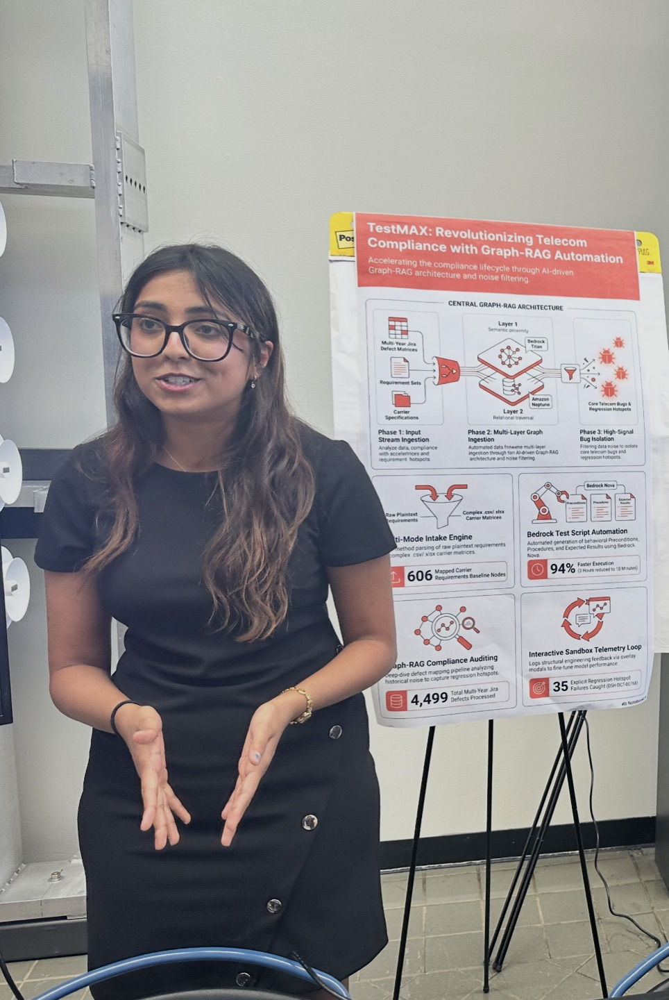
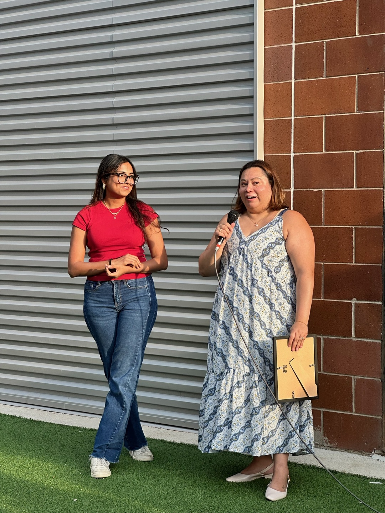

EchoStar · Boost Mobile Wireless Device Engineering · Summer 2026
Wireless engineering GraphRAG / TestMAX
Problem. Requirements, specifications, and tests were connected in practice but difficult to navigate as evidence. As Platform (AI/Automation) Engineering Intern, I built a GraphRAG system and production backend services to preserve those relationships during retrieval.
Decisions. I modeled traceability in graph data, analyzed test-case redundancy, redesigned data structures to reduce database bloat, and iterated with engineers, subject-matter experts, and OEM stakeholders.
12,000+
specification nodes
606 / 728
requirements / test cases
95%
reduction in workflow time and manual effort
2nd place
EchoStar Intern Innovation Competition
